Nội dung bài học
- Tạo một dự án Web API với Controller
- Kiểm tra API
- Cập nhật luanchURL
- Thêm một lớp dữ liệu (model class)
- Thêm lớp ngữ cảnh cơ sở dữ liệu (database context)
- Scaffold một controller
- PostTodoItem
- Cài đặt Postman
- Kiểm tra phương thức PostTodoItem dùng Postman
- Kiểm tra phương thức HTTP GET
- Ngăn chặn hiện tượng over-posting
Tạo ứng dụng ASP.NET Core MVC trong môi trường Visual Studio 2022 Community có nhiều cách và một trong những cách nhanh nhất là dùng các template có sẵn chúng ta thực hiện các bước sau:
1. Mở Visual Studio, chọn Create a new project, gõ Web API trên ô tìm kiếm, chọn ASP.NET Core Web API (chọn ngôn ngữ C#) và nhấn Next
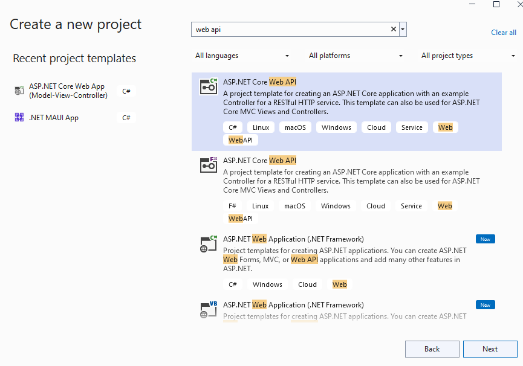2. Đặt tên dự án trong mục Project name là TodoApi và chọn vị trí lưu tại Location và nhấn Next:
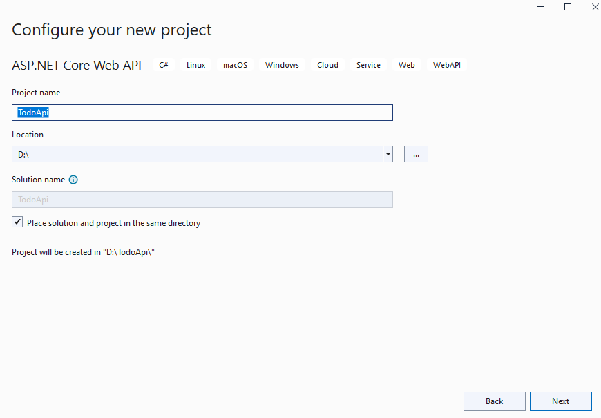3. Trong hộp thoại kế tiếp giữ nguyên các mặc định (xem hình dưới) và nhấn Create:
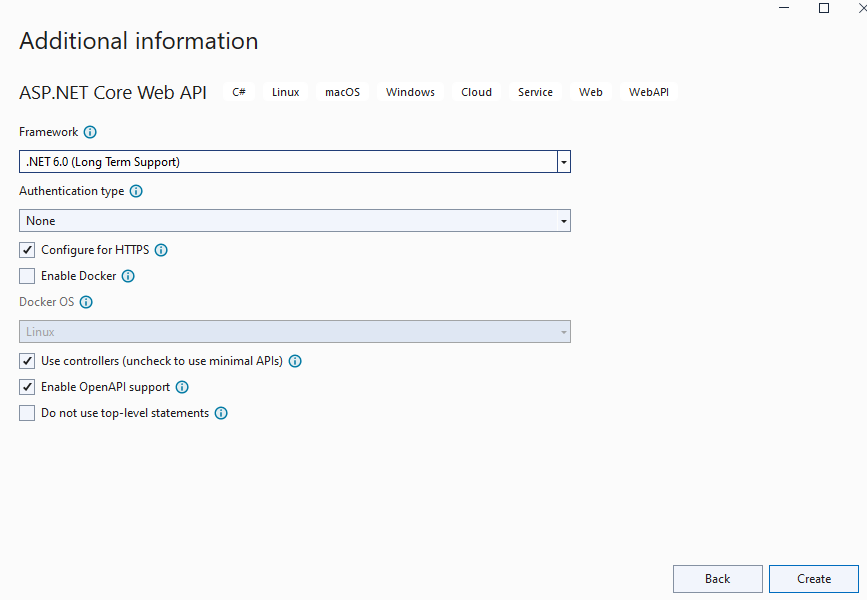Dự án đã có sẵn một API gọi là WeatherForecast. Có thể thực thi bằng cách chọn Debug > Start Without Debugging (Ctrl + F5) trang Swagger /swagger/index.html xuất hiện như sau:
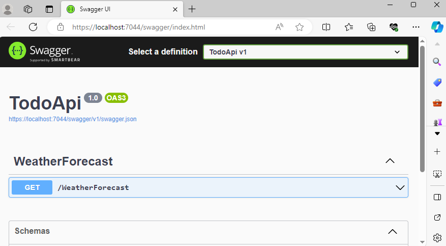Swagger là một công cụ giúp tự động tạo ra tài liệu API và cung cấp một cách để thử nghiệm các endpoint API mà không cần triển khai chúng. Chi tiết tham khảo thêm tại đây.
Chọn GET > Try it out
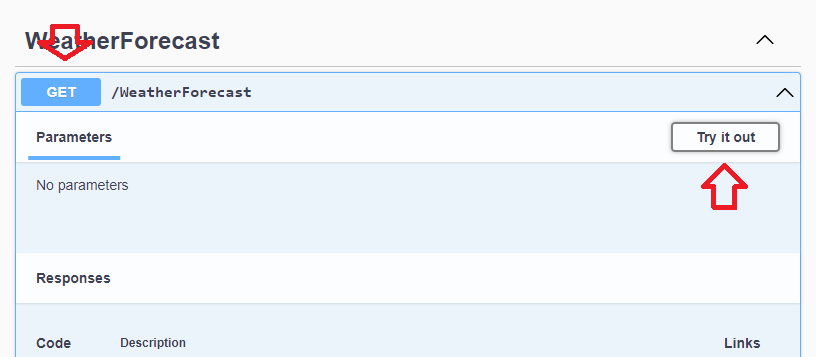Nhấn nút Execute. Trang web hiển thị:
Sao chép nội dung tại Request URL và dán trên trình duyệt web sẽ trả về nội dung JSON như sau:
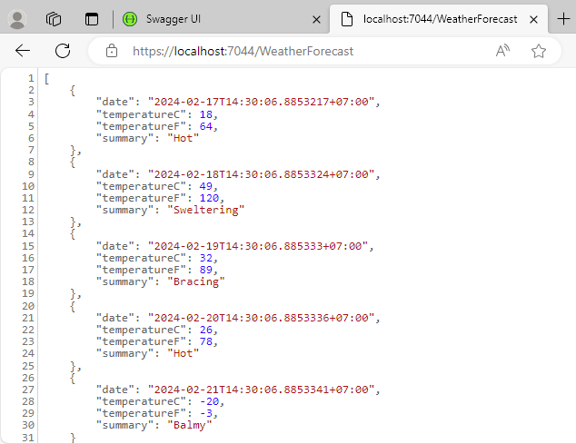Trong cửa sổ Solution Explorer tại mục Propertes chọn launchSettings.json và thay nội dụng của thuộc tính launchURL từ swagger sang api/todoitems
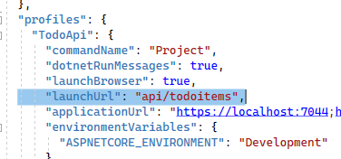Bởi vì Swagger sẽ được loại bỏ, đoạn mã trước đó thay đổi URL được khởi chạy sang phương thức GET của bộ điều khiển được thêm vào trong các phần sau.
Các lớp dữ liệu thể hiện các thuộc tính các đối tượng dữ liệu mà ứng dụng quản lý. Trong dự án TodoApi này, đối tượng dữ liệu của chúng ta là các công việc phải thực hiện (To-do items) bao gồm các thuộc tính Id (định danh công việc, tương đương khóa chính trong cơ sở dữ liệu quan hệ), Name (tên công việc) và IsComplete (trạng thái phản ánh công việc đã hoàn thành hay chưa). Với đối tượng công việc này, chúng ta sẽ tạo lớp TodoItem:
Thêm lớp TodoItem đến một thư mục tên Models của dự án theo các bước sau:
1. Trong cửa sổ Solution Explorer, nhấn chuột phải tại dự án TodoApi
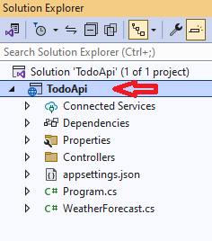Chọn Add > New Folder để thêm một thư mục và đặt tên là Models
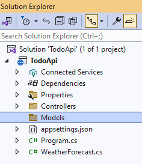2. Tại thư mục Models nhấn chuột phải chọn Add > Class để thêm một lớp mới và đặt tên là TodoItem. Nhấn Add. Thay đổi nội dung tập tin TodoItem.cs bằng nội dung:
Lớp ngữ cảnh cơ sở dữ liệu là lớp chính của EF (Entity Framework) kết nối giữa lớp dữ liệu (TodoItem) và cơ sở dữ liệu. Lớp này được tạo bằng cách kế thừa từ lớp Microsoft.EntityFrameworkCore.DbContext. Các bước thêm lớp ngữ cảnh tiến hành như sau:
Nhấn chuột phải vào thư mục Models chọn Add > Class và đặt tên lớp là TodoContext. Nhấn Add và thay đổi nội dung tập tin TodoContext.cs như sau:
Trong ASP.NET Core, các dịch vụ như DBContext phải được đăng ký với bộ chứa DI (Dependency Injection container). Bộ chứa này cung cấp dịch vụ đến các controller. Cập nhật nội dung Program.cs:
Đoạn mã trên xóa các lời gọi SWagger, thêm các using, đăng ký DBContext đến bộ chứa DI và xác nhận ngữ cảnh cơ sở dữ liệu là một cơ sở dữ liệu bộ nhớ trong (in-memory database).
Để scaffold một controller chúng ta thực hiện các bước sau:
1. Nhấn chuột phải vào thư mục Controllers chọn Add > New Scaffolded Item. Kế tiếp chọn API Controller with actions, using Entity Framework và chọn Add.
2. Trong hộp thoại Add API Controller with actions, using Entity Framework:
Tập tin mới tên TodoItemsController.cs được tạo ra
Thuộc tính [ApiController] được sử dụng để đánh dấu cho lớp TodoItemsController xác nhận đây là controller tương ứng với yêu cầu Web API. Đường dẫn URL cho mỗi phương thức trong lớp được xây dựng như sau:
Đây là phương thức HTTP POST vì được đánh dấu bởi thuộc tính [HttpPost]. Phương thức nhận giá trị từ nội dung của yêu cầu HTTP.
Phương thức CreateAtAction:
Chúng ta sẽ sử dụng từ khóa nameof trong C# để tránh việc sử dụng mã cứng trong phương thức CreateAtAction khi tham chiếu đến hành động GetTodoItem. Cập nhật lại lệnh return như sau:
Web API có thể được kiểm tra dùng Postman hay HttpRepl. Dùng HttpRepl có thể tham khảo tại đây.
Trong dự án này chúng ta sẽ dùng Postman để kiểm tra Web API. Truy cập https://www.postman.com/downloads/ để tải và cài Postman.
Mở Postman, đăng nhập (tạo tài khỏan hay đăng nhập qua Google), thực hiện vài câu hỏi sẽ đến giao diện sau:
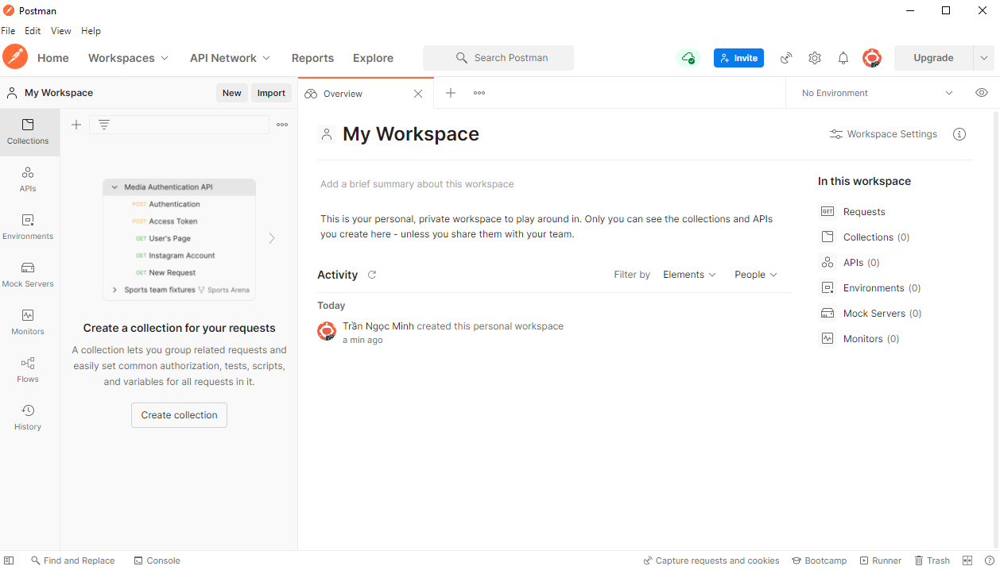Chúng ta có thể kiểm tra cách hoạt động của phương thức PostTodoItem thông qua Postman theo các bước sau:
1. Tạo một yêu cầu mới bằng cách nhấn vào dấu + bên phải mục Requests
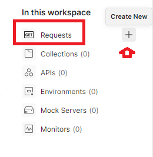Chọn phương thức POST
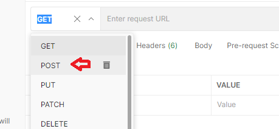Thực thi ứng dụng TodoApi dùng Ctrl + F5. Sao chép URL trên trình duyệt https://localhost:7044/api/todoitems và dán vào ô bên cạnh lệnh POST trong Postman:
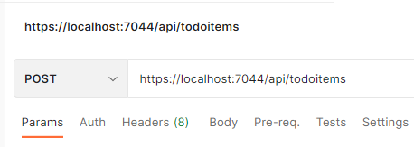Chú ý cổng 7044 là cổng thực thi phụ thuộc vào các máy khác nhau. Ứng dụng trong bài viết này thực thi tại cổng 7044 (Xem kiểm tra API WeatherForecast ở trên).
Kế tiếp chọn tab Body, chọn nút Raw và chọn kiểu dữ liệu là JSON:
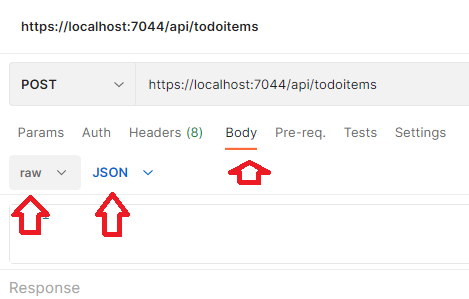Nhập nội dung sau trong ô trống:
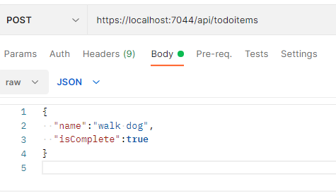Nhấn nút Send, kết quả từ khung Response bên dưới:
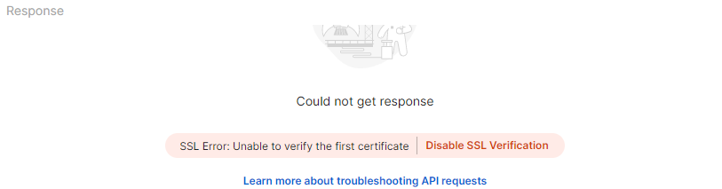Nhấn nút Disable SSL Verification:
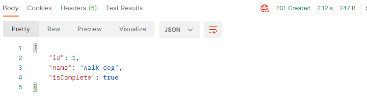Chọn Header:
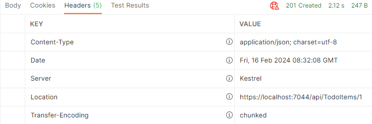Sao chép phần VALUE bên phải của Location là URL: https://localhost:7044/api/TodoItems/1 và dán vào ô URL của Postman và đổi phương thức từ POST sang GET:
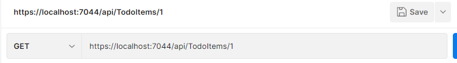Nhấn Send. Bây giờ chúng ta có thể kiểm tra URL https://localhost:7044/api/TodoItems trên trình duyệt web
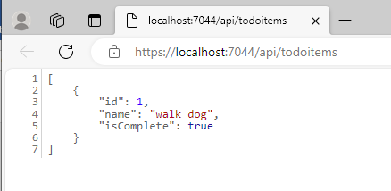Và https://localhost:7044/api/TodoItems/1
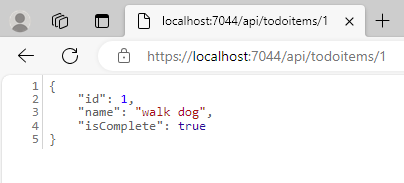Sẽ cho ra cùng kết quả.
Ở trên, sau khi thực hiện phương thức POST với Postman, chúng ta thực hiện phương thức GET sẽ cho ra cùng kết quả. Tuy nhiên, nếu ứng dụng ngừng hay bắt đầu lại thì phương thức GET sẽ không trả về giá trị nào. Nguyên nhân vì ứng dụng của chúng ta quản lý dữ liệu bộ nhớ trong sẽ mất khi ứng dụng tắt hay khởi động lại. Muốn GET trả về dự liệu, hãy thực hiện lại POST.
Để ý trong tập tin TodoItemControllers.cs có hai phương thức dùng cho HTTP GET là GetTodoItems và GetTodoItem:
Mỗi TodoItem sẽ được xác định bởi một Id duy nhất và phương thức GetTodoItem nhận item theo Id này.
Kiểu của giá trị trả về cho hai phương thức GET là kiểu ActionResult <T>. ASP.NET Core sẽ tự động chuyển dữ liệu sang dạng JSON và viết sang nội dung của thông điệp hồi đáp. Mã hồi đáp cho kiểu dữ liệu này là 200 và giả sử không có các ngoại lệ chưa được xử lý. Các ngoại lệ chưa được xử lý được chuyển sang các lỗi có mã 5xx. Trường hợp phương thức GetTodoItem không tìm thấy đối tượng TodoItem có Id được yêu cầu, mã 400 sẽ được trả về. Một vài mã trạng thái phổ biến thường gặp:
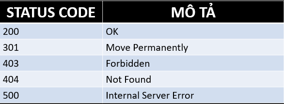PutTodoItem tương tự PostTodoItem ngoại trừ việc sử dụng HTTP PUT. Cách kiểm tra PutTodoItem (chọn PUT) và DeleteTodoItem (chọn DELETE) trong Postman tương tự GET và POST. Chú ý phải có dữ liệu trước khi thực hiện, nếu chưa có thì cần cung cấp dữ liệu bằng cách thực hiện POST (xem lại ở trên).
Lớp dữ liệu trong ứng dụng của chúng ta là TodoItem và khi một ứng dụng được triển khai trong thực tế, một tập con của lớp dữ liệu được sử dụng thay thế với mục đích hạn chế dữ liệu đầu vào và dữ liệu trả về để tăng cường tính bảo mật cho ứng dụng. Kỹ thuật này được gọi là Data Transfer Object (DTO). DTO có thể được dùng để: